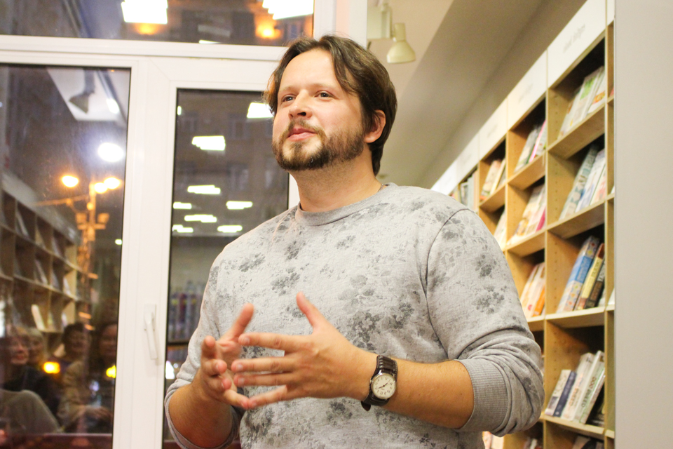
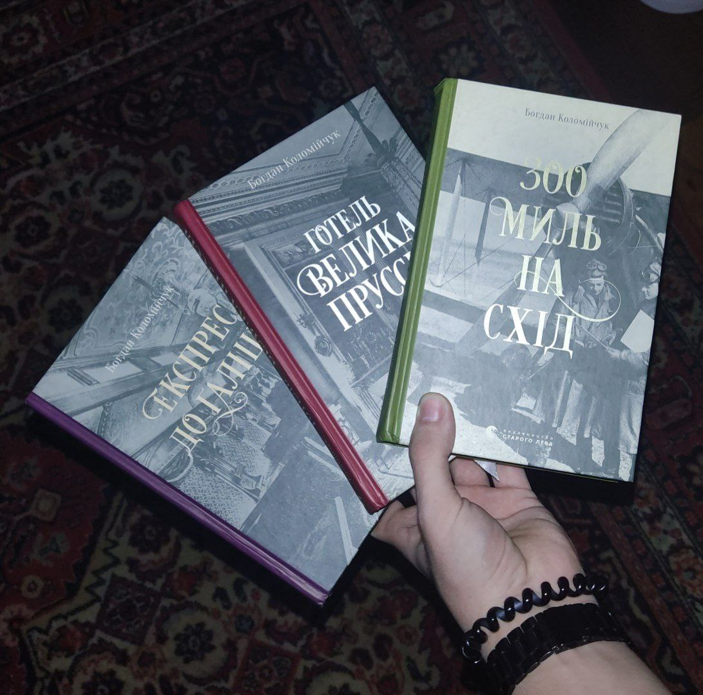
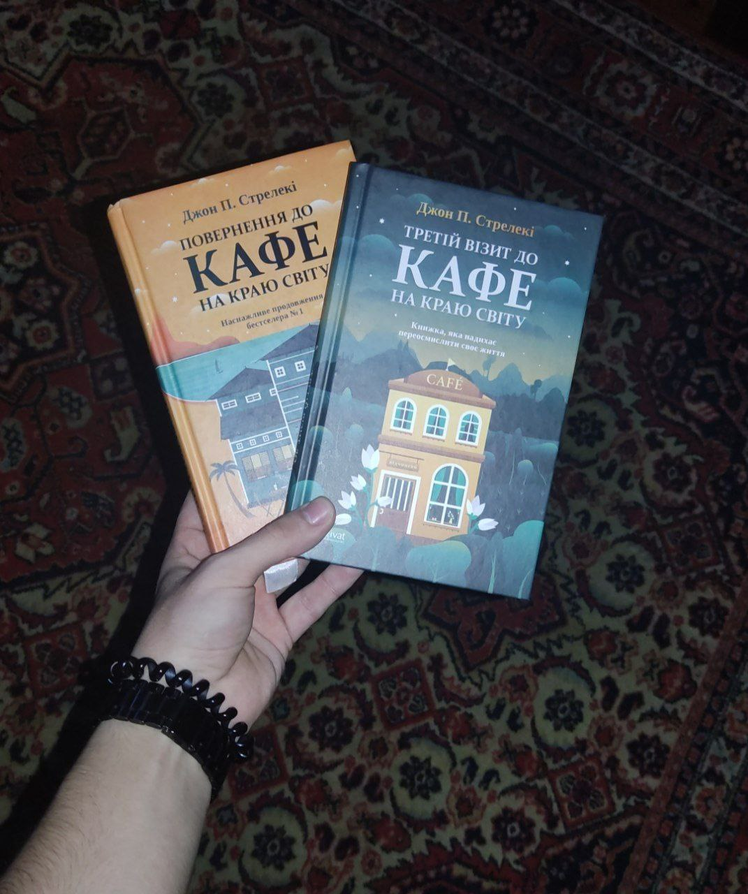

Книги, які прочитав
Мені дуже подобається письменник Богдан Коломійчук. Цей сучасний автор багатьох романів та
історичних новел, який запв мені до душі.Я із кожною прочитаною книгою все більше полюбив цього автора.

Богдан Коломійчук
Книги Коломійчука, які мені припали до душі
До мої душі припали три його книги. Експрес до Галіції - перша моя книга цього автора,
в якій на мене чекали заплутані справи та небезпечні розслідування. "Весна 1906 року. Під час відпустки у Швейцарії комісар львівської поліції Адам Вістович несподівано втягується
у небезпечну шпигунську гру, в якій на карту поставлено не лише людські життя, але й долі імперій.
Розшифрувавши секретний документ, Вістович дізнається занадто багато, як на звичайного детектива з далекого австрійського Львова.
У цей же час з клініки в курортному Бадені зникає дивний російський пацієнт, якого розшукують
розвідки одразу кількох країн, а у Венеції стається вбивство непримітного перекладача
з німецької. Вістовичу доведеться з’ясувати, як пов’язані ці події і чому сліди, здавалося б, непов’язаних
справ ведуть до Львова.

Також мені сподобалися "Готель велика Прусія" та "300 миль на схід"
Також зараз читаю книгу Джона П.Стрелекі Кафе на краю світу 1 по 3 частину

|